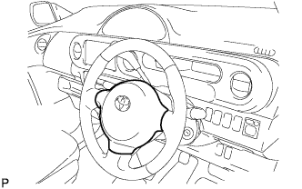
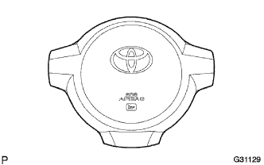
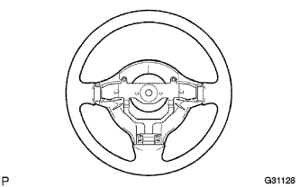
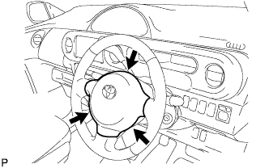

Spiral cable SUB-ASSY installation |
| 1. Check the front tire straight state |
| 2. Spiral cable SUB-ASSY installation |
Make the turn signal Sutsuchi a nyutoral position.
Attach a spiral cable by combining three places of claws.
Connect a connector and connector for air bats.
| 3. Steering column cover installation |
 |
Attach the steering column cover with three screws.
| 4. Spiral cable centering |
Confirm that the IG Suitsu is OFF (Lock).
Confirm that the minihana stormy of the crosster has been removed.
 |
Turn the spiral cable until the counterclockwise direction is wandered.
 |
Return 2.5 turns back in the clock direction from the swinging position of the spiral cable, and match the center mark in the figure.
| 5. Steering wheels ASSY installation |
The steering wheel ASSY match mark is attached with a nut according to the steering main shiap ASSY matching mark.,,
| 6. Horn button ASSY installation |
Tighten two torx bolts using a Turksket wrench (T30).
| 7. Horn button ASSY inspection |
|  |
Vehicles that are not involved in the collision
If the following items are applicable, replace the horn button ASSY with a new one.
Vehicles that have collided but have not operated with air passage
|  |
Remove the horn button ASSY, and replace the horn button ASSY with a new one if it falls under the following items.
|   |
If the following items fall, replace the horn button ASSY and the steering wheel asser with a new one with a set.
| 8. Battery Mina Star Minal Connection |
| 9. Airbag Warnin Grand Point Inspection |
reference)